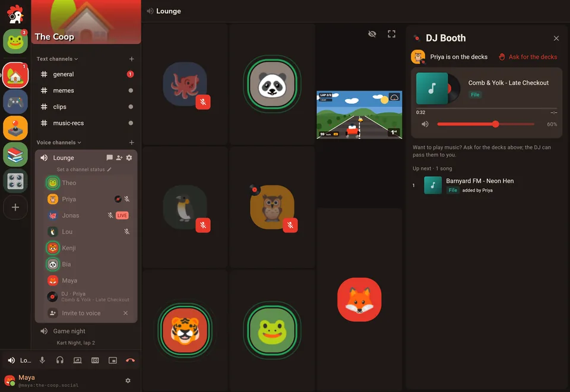
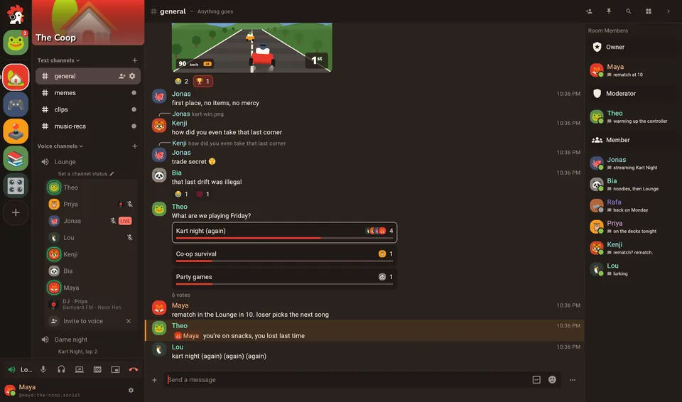
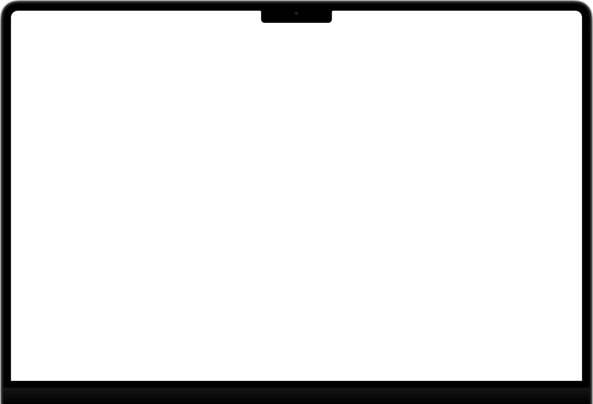
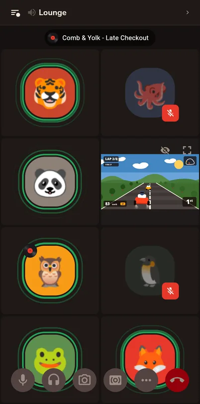
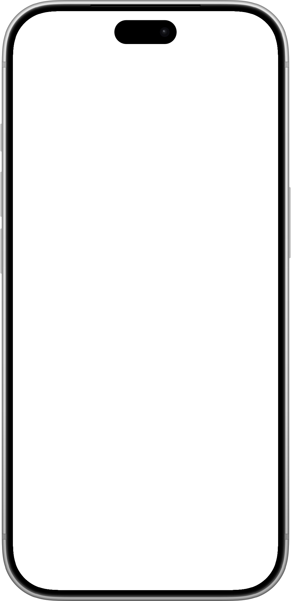
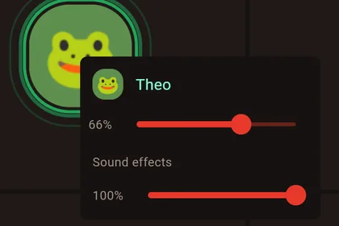
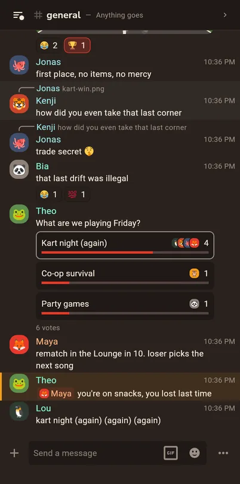
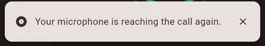
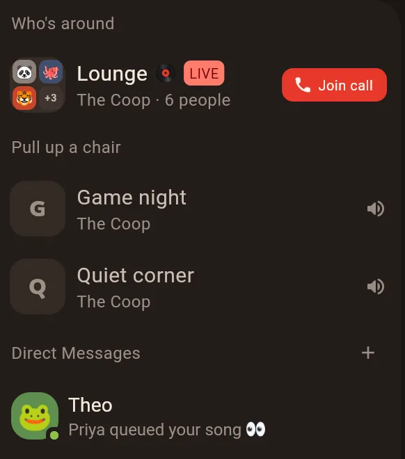

Supressão de ruído que fica no seu computador
O DeepFilterNet3 limpa o seu microfone no seu próprio computador, ou no navegador, antes de qualquer coisa sair dele. Teclado, ventilador e lava-louças ficam em casa.
Fala. Joga. Fica de boa.
Salas de voz sempre abertas, compartilhamento de tela com som, soundboard, cabine de DJ e canais de texto para tudo o que rola entre uma partida e outra. Feito sobre o Matrix, então a casa é sua.

Salas de voz
Uma sala de voz é uma sala, não uma ligação. Ninguém fica chamando: ela está aberta enquanto tiver alguém dentro, e você vê quem está lá antes de puxar uma cadeira.
As salas não tocam, elas simplesmente estão lá. Entre e saia quando quiser, e veja quem está por aí antes de entrar. Ajuste o volume de cada pessoa, use o push-to-talk se preferir e deixe a supressão de ruído tirar a lava-louças do seu microfone.
Transmita um jogo ou passe um filme para todo mundo. Você escolhe a taxa de bits e de quadros, e ninguém te cobra pelo 1080p. Quando várias pessoas compartilham, dá para assistir lado a lado.
Seis clássicos moram embaixo do galo em toda chamada. Adicione os sons da sua casa a partir de um arquivo ou de um link, corte no editor, e todo mundo ouve no mesmo volume. Sem assinatura para usar em qualquer lugar.
Monte a fila com as suas próprias músicas e toque para a sala. Todo mundo ouve a mesma música no mesmo instante, inclusive quem chega atrasado, e cada pessoa ajusta o próprio volume. Extensões de fontes que você instalar trazem mais opções.
Respostas, reações, enquetes, threads, GIFs, emojis e figurinhas personalizados, em canais que você organiza nas suas próprias categorias. Reels do Instagram tocam direto no chat, e posts do X aparecem como cartões completos.
Por dentro
Cada tela desta página é o próprio app, com gente inventada dentro. Instale no Windows, no macOS ou no Linux, ou abra no navegador sem instalar nada.




No navegador funcionam a voz, o compartilhamento de tela, o soundboard e a cabine de DJ. No celular, adicione à tela inicial e ele abre como um app.


Espaços são casas, canais são cômodos. Organize os canais nas suas categorias, veja quem está por aí e aumente ou abaixe o volume de qualquer pessoa na chamada.
Um instalador, e atualizações que se instalam sozinhas por cima da versão aberta.
Uma versão universal para Apple Silicon e Intel, em imagem de disco.
x64 e arm64, com script de instalação. Também se atualiza sozinho.
Nada para instalar, com voz. No celular, adicione à tela inicial.
Os detalhes
O DeepFilterNet3 limpa o seu microfone no seu próprio computador, ou no navegador, antes de qualquer coisa sair dele. Teclado, ventilador e lava-louças ficam em casa.
A cada segundo, o Rooster confere se o seu microfone ainda chega à sala e se você ainda ouve todo mundo. Se não, ele conserta a conexão sem você precisar sair e entrar de novo.

Veja quem está on-line, ausente ou numa chamada, logo abaixo das suas casas, e as salas quietas onde dá para puxar uma cadeira.

Desative o microfone e desligue pela barra de tarefas no Windows, pelo Dock no macOS, pelo lançador no Linux ou por um painel flutuante no navegador.
Adicione um som a partir de um arquivo, de um link para um áudio ou de uma página que uma extensão de fontes conhece, e corte só a parte boa.
Entre com qualquer conta Matrix, do matrix.org ou de onde for, ou rode um servidor para a sua turma. Casas em servidores diferentes continuam conversando entre si, e com quem usa outros apps Matrix.
Inglês e português do Brasil, nada traduzido pela metade. Segue o idioma do sistema, a menos que você escolha outro.
Rooster vs Discord
O Rooster tem as salas de voz, o soundboard, o compartilhamento de tela e os canais de texto que você conhece do Discord. O que muda é de quem é a casa, e quanto custa ficar à vontade.
Discord é uma marca registrada da Discord Inc. O Rooster não tem relação com o Discord. Comparação conferida com os planos e anúncios públicos do Discord em outubro de 2026.
Perguntas
Contas, servidores, celular e quanto custa.
Não. Entre com qualquer conta Matrix, do matrix.org ou de qualquer outro servidor, ou crie uma lá. Se a sua turma quiser uma casa própria, rode um servidor como o Synapse, com o LiveKit e o serviço de JWT dele ao lado para as salas de voz (a mesma configuração que o Element Call usa).
É. Não tem plano pago, anúncio nem rastreamento. O Rooster tem código aberto, sob a AGPL-3.0. Coisas como o tamanho máximo dos arquivos são definidas pelo seu servidor, não por um plano.
Ainda não pelas lojas de apps. Abra o Rooster no navegador do celular e adicione à tela inicial: ele abre como um app, e as salas de voz funcionam lá também.
Consegue. Salas, mensagens diretas e espaços são Matrix puro, então funcionam entre apps e servidores. Os extras do Rooster, como o soundboard e a cabine de DJ, aparecem para quem usa o Rooster.
As mensagens em salas criptografadas e em mensagens diretas têm criptografia de ponta a ponta, e vocês podem verificar os aparelhos um do outro com emojis. As chamadas são criptografadas no caminho até o servidor. Salas de voz com criptografia de ponta a ponta ainda são um experimento que você liga em Configurações → Experimentos.
A versão para macOS ainda não é assinada pela Apple. Na primeira vez, clique com o botão direito no Rooster e escolha Abrir. Depois disso, ele abre normalmente.
Baixar
Grátis, para todo computador que você tiver, e no navegador.
As versões para Windows e Linux se atualizam sozinhas. A versão para macOS ainda não é assinada pela Apple: na primeira vez, clique com o botão direito → Abrir. Todas as versões estão no GitHub.

Traga o galinheiro todo. É grátis, e é seu.